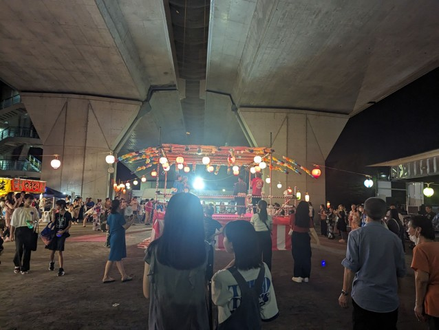
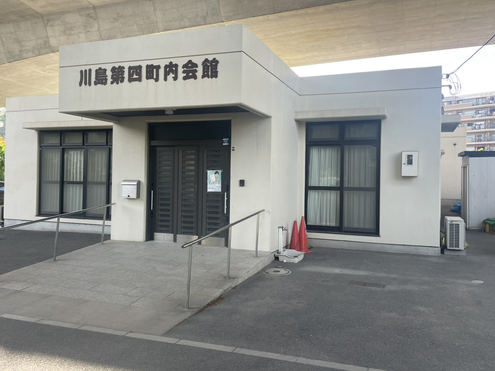

ソフトボール大会の写真を掲載しました
写真
ソフトボール大会の写真を掲載しました
写真
主な内容
- 模擬店の出店
- 素人演芸
- 13日午前：神輿・山車巡業
- 子ども会による演芸参加予定
- 地域の皆様の交流の場
川島第四町内会ホームページの主な更新内容をお知らせします。
川島第四町内会の行事、活動報告、写真掲載、清掃・防災などの公式なお知らせを掲載します。
小学校・中学校のPTA、部活動、少年野球・サッカー・バスケなどの習い事、ゴルフコンペ・趣味の集まり・交流会、消防団、地域のお店、地域団体や住民の方から寄せられた情報など、地域に関係するお知らせを幅広く掲載します。
掲載したい地域情報がある場合は、スマートフォンからGoogleフォームで掲載依頼できます。
地域の皆様が集まり、子どもから大人まで楽しめる夏の恒例行事です。模擬店や素人演芸、神輿・山車巡業などを通じて、地域のつながりを深めます。

夏祭りの雰囲気※開催内容・時間・雨天時対応などの詳細は、決まり次第、回覧板・掲示・ホームページでお知らせします。
川島第四町内会は、地域の安心・安全・交流を大切に活動しています。
こんにちは！私たち川島第四町内会ホームページへようこそ。
当町内会は、約400世帯が暮らす活気ある地域です。私たちは『一致団結』の精神を大切に、お子様からご年配の方まで、誰もが「この街に住んでよかった」と思えるような、温かく魅力的なコミュニティを目指して活動しています。
スマートフォンでは、カードを左右にスワイプしてご覧ください。
地域の皆様の安全を守るため、防災対策には特に力を入れています。
地域沿いに流れる帷子川には四季折々の野鳥が姿を見せ、散歩を楽しむ方々の目を楽しませてくれます。こうした豊かな自然も、私たちの街の自慢のひとつです。
「川島東部連合町内会（第一から第六町内会）」の一員として、近隣地域とも手を取り合い、一歩進んだ安全・安心な街づくりを推進しています。
町内会 会長より、地域の皆様へのごあいさつです。
地域の皆様には、日頃より町内会活動に対し多大なるご理解とご協力をいただき、厚く御礼申し上げます。
今年度より、当町内会の会長を務めさせていただきます、新井 好美（あらい よしみ）でございます。
私たちの街には、豊かな自然と温かなコミュニティがありますが、時代の変化とともに、地域での「つながり」の重要性はますます高まっています。
特に防犯・防災、そして福祉の観点において、「お隣さん・近所の方と顔の見える関係を日頃から築いていくこと」は、何物にも代えがたい大切な備えとなります。いざという時に助け合える、そんな温かな絆こそが、私たちの街の守り神になると信じております。
約400世帯の皆様が、安全で安心して暮らせる社会の実現に向け、私たち役員と地域社会がこれまで以上に連携を深めていくことの重要性を、今改めて強く感じております。
『一致団結』をモットーに、子育て世代からご年配の方まで、皆様と一緒に「この街に住んでいて良かった」と思える魅力ある地域づくりに邁進してまいる所存です。
皆様のより一層のご支援とご協力をお願い申し上げ、就任のご挨拶とさせていただきます。
令和8年5月吉日
町内会 会長 新井 好美
川島第四町内会の対象エリア、町内会館、世帯数、班数などです。

地域の皆様が参加できる行事や、川島東部連合町内会の関連イベントをご案内します。
スマートフォンでは、春・夏・秋冬のカードを左右にスワイプしてご覧ください。
※日程・会場・内容は変更となる場合があります。正式な案内は回覧板・掲示・ホームページのお知らせをご確認ください。
誰もが安心して暮らせる街を目指し、防災・防犯と地域連携に取り組んでいます。
避難所となる小学校での実践的な訓練です。町内会としてまとまって移動するため、まずは会館へお集まりください。
避難所でのペット受け入れルールや同行避難のシミュレーションも予定しています。
町内会独自の防災訓練も予定しています。
役員が班を編成し、定期的な見回りを行っています。特に犯罪の起きやすい時期や夜間の安全確保に努めています。
万が一の事態に備え、地域内にある8つの福祉施設と緊密に連携を取り合っています。高齢者の方や支援が必要な方々を含め、地域全体で助け合える体制づくりを継続して推進します。
街をきれいにしながら、ご近所同士のつながりを深める活動です。
当町内会では、地域の美化運動の一環として、街をきれいにする『さわやか清掃』を実施しています。
この活動は、単に街をきれいにするだけでなく、「作業を通じてご近所同士が挨拶を交わし、人とのつながりを深めること」を大切な目的としています。
「普段はなかなか話す機会がないけれど、清掃をきっかけに顔見知りが増えて安心感につながった」というお声もいただいています。
スマートフォンでは、カードを左右にスワイプしてご覧ください。
日曜日の午前9時から実施します。集合場所は川島第4町内会館です。
集合場所：川島第4町内会館 ／ 雨天中止
ゴミ拾いや環境整備で、誰もが気持ちよく過ごせる街を目指します。
世代を超えた交流の場として、新しいつながりを作ります。清掃のあとの「お疲れ様」の一言が、住みよい街づくりへの第一歩です。
地域の子どもたちが集まり、季節ごとのイベントを通じて楽しい思い出作りをしています。
現在、令和8年度は47名の元気な子どもたちが在籍しています。
その他、年間を通じて各種地域イベントに楽しく参加しています。
町内会への加入は、メールでのお申し込み、またはGoogleフォームからお申し込みいただけます。
スマートフォンでQRコードを読み取り、Googleフォームからお申し込みください。
Googleフォームを開く転入される方は入会月からの月数分を納入、転居される方は未経過月分を計算し、後日返金いたします。異動が発生する際は、お早めに班長までお知らせください。
ごみ出し・資源回収カレンダー、回覧板の運用についてご案内します。
| 曜日 | 回収内容 |
|---|---|
| 月曜日 | プラスチック |
| 火曜日 | 燃えるゴミ（燃えないゴミ・スプレー缶・電池類） |
| 水曜日 | 回収なし |
| 木曜日 | 紙（古紙・段ボールなど） |
| 金曜日 | ビン・カン・ペットボトル（小さな金属類） |
| 土曜日 | 燃えるゴミ（燃えないゴミ・スプレー缶・電池類） |
| 日曜日 | 回収なし |
詳しくはネット検索「保土ヶ谷区の収集曜日」の東川島町をご覧ください。
【お願い】ごみは当日朝に出してください。分別の徹底をお願いいたします。
行政の情報誌や町内会からのお知らせを、以下の流れで各ご家庭へお届けします。